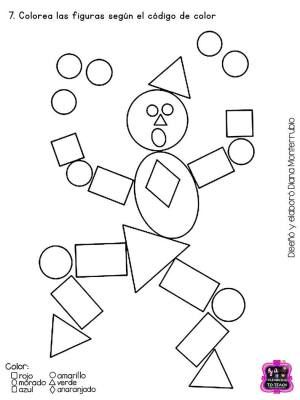

REALIZA EN UNA HOJA EL SIGUIENTE DIBUJO DE FIGURAS GEOMETRICAS Y COLOREA, AL FINALIZAR MUESTRALO A TU PROFESOR Y ESPERA QUE TE CALIFIQUE.  APRENDE A COLOREAR CON EL SIGUIENTE VIDEO, !NO TE LO PIERDAS¡